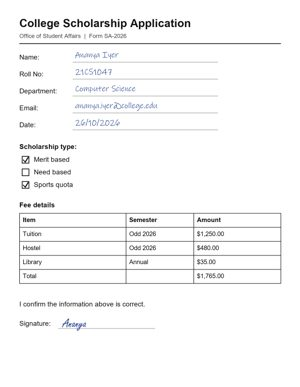
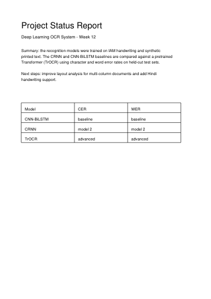

Turn handwriting and messy scans into structured, editable text.
Five recognition models read every line and vote on each word. A word several models agree on is far more likely to be right. Image cleanup, layout analysis and error correction are included, and every disputed word is flagged for review.
5.7%character error on handwriting from unseen writers
2.4%character error on printed & degraded text
12 msper line with our fastest model, on a laptop CPU
- PDF, PNG, JPG, TIFF and WEBP, up to 100 pages
- Headings, tables, checkboxes and signature fields detected
- Export Markdown, plain text or JSON
What happens to your document
- Clean upStraighten, denoise, boost contrast
- Find & readDetect each line; up to five models read it
- VoteWords the models agree on win; disagreements are flagged
- Rebuild layoutHeadings, tables, checkboxes, reading order
- ReviewFix flagged words, then export
New extraction
Processed locally1Document
Drop a file here, or browse
PDF, PNG, JPG, TIFF or WEBP · up to 100 MB
Paste Ctrl VCamera
2Recognition engineError rates measured on held-out test sets. Lower is better.
Consensus · 5 modelsMost accurateOurs · ensembleAll models read each line, then vote word by word
Handwriting5.7%
Print2.4%
1.0 s
per line
per line
TrOCR · fine-tunedBest balanceOurs · fine-tunedVision Transformer tuned on our data
Handwriting6.7%
Print2.6%
0.4 s
per line
per line
CRNNOurs · trainedCNN + BiLSTM + CTC, 2.8 M parameters
Handwriting21.7%
Print5.2%
16 ms
per line
per line
CNN-BiLSTMOurs · baselineCNN features + BiLSTM + CTC, 2.4 M
Handwriting21.8%
Print4.8%
12 ms
per line
per line
TrOCRPretrainedMicrosoft TrOCR-small, as released
Handwriting7.0%
Print20.4%
0.38 s
per line
per line
PaddleOCRReferenceIndustrial PP-OCR, strong on print
Handwriting28.8%
Print3.9%
0.14 s
per line
per line
3Options
Image cleanupAutoScanPhotoOffStraightens tilted pages and boosts faint text.
Auto-correctFixes OCR typos; each change can be undone.
Extract textCtrl ↵
Or try a sample document
Runs instantly with the recommended settingsHandwritten note8 lines of real IAM handwriting from unseen writersTrOCR · fine-tuned

Application formFields, checkboxes, a ruled table and a signaturePaddleOCR
Noisy, skewed scan4° tilt, speckle noise and uneven lightingAuto cleanup

Two-page PDF reportPrinted report with a table, then a handwritten pageMulti-page